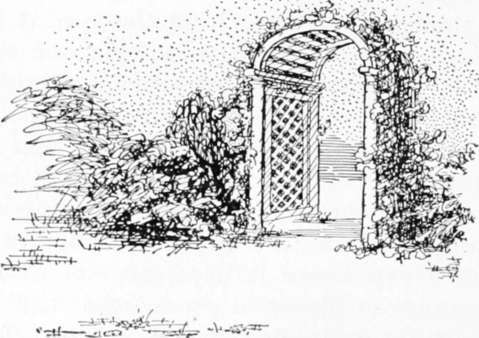

Embellishments. Part 5
Description
This section is from the book "Landscape Gardening", by Andrew Jackson Downing. Also available from Amazon: Landscape Gardening.
Embellishments. Part 5
The shrubbery is so generally situated in the neighborhood of the flower-garden and the house, that we shall here offer a few remarks on its arrangement and distribution.
A collection of flowering shrubs is so ornamental, that to a greater or less extent it is to be found in almost every residence of the most moderate size: the manner in which the shrubs are disposed, must necessarily depend in a great degree upon the size of the grounds, the use or enjoyment to be derived from them, and the prevailing character of the scenery.
It is evident, on a moment's reflection, that shrubs being intrinsically more ornamental than trees, on account of the beauty and abundance of their flowers, they will generally be placed near and about the house, in order that their gay blossoms and fine fragrance may be more constantly enjoyed, than if they were scattered indiscriminately over the grounds.
Fig. 27. Garden Gate and Rose Trellis.
Where a place is limited in size, and the whole lawn and plantations partake of the pleasure-ground character, shrubs of all descriptions may be grouped with good effect, in the same manner as trees, throughout the grounds; the finer and rarer species being disposed about the dwelling, and the more hardy and common sorts along the walks, and in groups, in different situations near the eye.
When, however, the residence is of larger size, and the grounds have a park-like extent and character, the introduction of shrubs might interfere with the noble and dignified expression of lofty full grown trees, except perhaps they were planted here and there, among large groups, as underwood; or if cattle or sheep were allowed to graze in the park, it would of course be impossible to preserve plantations of shrubs there. When this is the case, however, a portion near the house is divided from the park (by a wire fence or some inconspicuous barrier) for the pleasure-ground, where the shrubs are disposed in belts, groups, etc., as in the first case alluded to.
There are two methods of grouping shrubs upon lawns which may separately be considered, in combination with beautiful and picturesque scenery.
In the first case, where the character of the scene, of the plantations of trees, etc., is that of polished beauty, the belts of shrubs may be arranged similar to herbaceous flowering plants, in arabesque beds, along the walks. In this case, the shrubs alone, arranged with relation to their height, may occupy the beds; or if preferred, shrubs and flowers may be intermingled.
Where picturesque effect is the object aimed at in the pleasure-grounds, it may be attained in another way; that is, by planting irregular groups of the most vigorous and thrifty growing shrubs in lawn, without placing them in regular dug beds or belts; but instead of this, keeping the grass from growing and the soil somewhat loose, for a few inches round their stems (which will not be apparent at a short distance). In the case of many of the hardier shrubs, after they become well established, even this care will not be requisite, and the grass only will require to be kept short by clipping it when the lawn is mown.
As in picturesque scenes everything depends upon grouping well, it will be found that shrubs may be employed with excellent effect in connecting single trees, or finishing a group composed of large trees, or giving fulness to groups of tall trees newly planted on a lawn, or effecting a union between buildings and ground. It is true that it requires something of an artist's feeling and perception of the picturesque to do these successfully, but the result is so much the more pleasing and satisfactory when it is well executed.
When walks are continued from the house through distant parts of the pleasure-grounds, groups of shrubs may be planted along their margins, here and there, with excellent effect. They do not shut out or obstruct the view like large trees, while they impart an interest to an otherwise tame and spiritless walk. Placed in the projecting bay, round which the walk curves so as to appear to be a reason for its taking that direction, they conceal also the portion of the walk in advance, and thus enhance the interest doubly. The neighborhood of rustic seats, or resting points, are also fit places for the assemblage of a group or groups of shrubs.
For the use of those who require some guide in the selection of species, we subjoin the accompanying list of hardy and showy shrubs, which are at the same time easily procured in the United States.* A great number of additional species and varieties, and many more rare, might be enumerated, but such will be sufficiently familiar to the connoisseur already; and what we have said respecting botanical rarities in flowering plants may be applied with equal force to shrubs, viz. that in order to produce a brilliant effect, a few well chosen species, often repeated, are more effective than a great and ill-assorted melange.
In the following list, the shrubs are divided into two classes — No. 1 designating those of medium size, or low growth, and No. 2, those which are of the largest size.
* The reader may fairly be reminded that Mr. Downing was a most competent plantsman. Though longer experience and later introductions have considerably changed the nurserymen's lists, this catalog of plants will still be useful and interesting. — F. A. W.
Continue to: